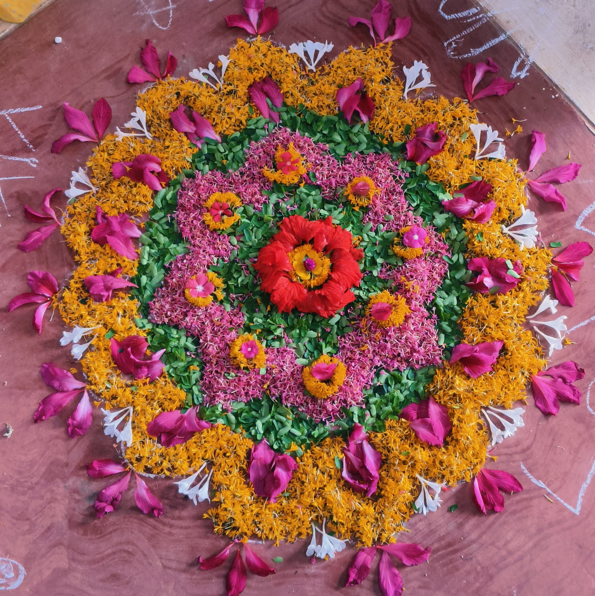

Neurodiversity at Farmhill
At Farmhill, our commitment to neurodiversity runs deep—beyond the surface-level presence of children with varied neurotypes, right into the heart of our community’s philosophy and daily practices. Neurodiversity, for us, is not a label reserved for those on the autism spectrum or for individuals with specific diagnoses. It represents the natural spectrum of human minds. As we often say, if you plot everyone on a graph—autistic, neurotypical, or otherwise - what emerges is not a binary, but a gentle bell curve, a true tapestry of difference and similarity.

Building on Foundational Diversity
From the very beginning, we recognized that every individual, regardless of neurotype, encounters struggles - be they emotional, practical, or social. All of us need help at times, whether it’s with daily routines like eating and gardening, or with navigating more complex emotional currents. Our mandate is simple: remain available and responsive to this universal, deeply human need for support.
But what does it actually mean to call Farmhill a neurodiverse community? Is it enough for different neurotypes to simply coexist? We believe it’s more than just sharing space. The ongoing question here - one we never tire of asking - is: How do we move from mere tolerance to active, thoughtful inclusion? This commitment to ongoing inquiry has become the cornerstone of our philosophy.
Participation, Equity, and Honest Feedback
Our journey has taught us that inclusivity is a living, evolving challenge. At first, we aimed for total group participation - everyone doing everything together, all the time. Yet, in practice, we learned that despite our best intentions and support, certain activities did not meet all children’s needs, particularly those of our autistic members. For some, these activities remained inaccessible or stressful, regardless of scaffolding. Simultaneously, neurotypical children shared that constant adaptation sometimes lessened their own engagement and joy.
This feedback led us to a vital realisation: meaningful participation isn’t achieved by forcing sameness, but by embracing difference. We began to select or adapt activities where everyone - regardless of neurotype - could truly engage, even if that meant the group sometimes split to pursue what resonated most for each.
The Nuances of Support and Setting Boundaries
As our practice evolved, so did our approach to support. Support at Farmhill is not about creating dependence or erasing differences, but about creating support as an “equalizer.” Each person receives the help they need to launch from where they are - ensuring no one is left behind, whatever their starting point.
With this, new challenges emerged. As our autistic children grew older, we noticed difficulties around boundaries - sometimes, boundaries were unclear or not respected, both by and around them. In reflecting on our own actions, we observed how adults, in offering robust support, had sometimes not modeled or maintained boundaries clearly. Our response has been to become deliberate: to define, discuss, and honor boundaries - first by example, then by expectation - ensuring that all children participate in the process.
Equity in Action
Equity, not equality, guides our collective responsibilities. On any given day, who undertakes a task at Farmhill depends not on neurotype, but on skills, interest, availability, and the requisite support available. Whether child or adult - experienced or new - each person’s contribution is valued based on capacity and context.
This approach sparks ongoing dialogue. Matters of fairness, balance, and workload are active, living conversations - not just between neurotypical and autistic children, but adults and children, and among the adults themselves. We treasure this spirit of transparency and continuous negotiation. It is through this living, breathing process that we craft an equitable community.
Constantly Learning - From Each Other, With Each Other
Farmhill is a place of mutual learning and humility. Our teenagers - autistic and neurotypical alike - are often our greatest teachers, challenging us, asserting themselves, and pushing us to examine our practices with unflinching honesty. When we make mistakes (and we do), we hold space for reflection, conversation, and growth. Sometimes we err by applying neurotypical goals to autistic children or the reverse; but these errors fuel our learning journey.
We look forward to a future where these adaptations and considerations come so naturally that we may not even need to name them. Until then, though, we honor the conscious effort, the questions, and the mistakes that shape us. For us at Farmhill, neurodiversity is not simply about who is present, but about how we live together. It is the work - in all its complexity, trial, and reward - of making space for every mind to belong and to thrive.
At Farmhill, cultivating a philosophy of true neurodiversity means holding conversation, curiosity, and compassion at the centre of our community life—learning together, always.